Simulado 1
10/01/2027, domingo, 8h

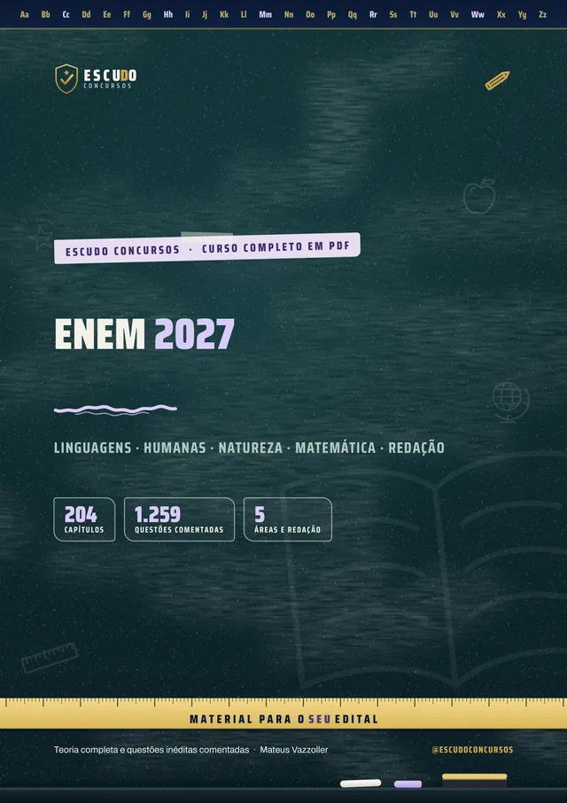
1.259questões
comentadas
A nota do ENEM sai pela TRI, a Matemática sozinha ocupa uma das quatro áreas e a redação vale até 1.000 pontos. O seu material cobre tudo isso, no estilo da prova? Curso feito a partir das matrizes do Inep e da incidência dos assuntos nas provas de 2021 a 2026, com questões inéditas de A a E e gabarito comentado.
Prova provável em 07 e 14/11/2027, ainda sem data oficial do Inep
R$59,90
À vista, pagamento único. Acesso imediato. A Revisão Expressa (R$ 19,90) aparece na compra, como opção.
A prova
O ENEM tem dois domingos de prova. No primeiro dia caem Linguagens, Códigos e suas Tecnologias, a Redação e Ciências Humanas e suas Tecnologias, em 5 horas e 30 minutos. No segundo, Ciências da Natureza e suas Tecnologias e Matemática e suas Tecnologias, em 5 horas. São 45 questões objetivas por área, todas de 5 alternativas, de (A) a (E), e uma redação dissertativo-argumentativa de até 30 linhas, nota de 0 a 1.000.
A data oficial do ENEM 2027 ainda não foi divulgada. A data provável é 07 e 14 de novembro de 2027, no padrão dos últimos anos (o ENEM 2026 foi aplicado em 08 e 15/11/2026).
A nota das questões objetivas não é a contagem de acertos: ela sai pela Teoria de Resposta ao Item (TRI), que também olha a coerência das respostas. Por isso garantir as questões mais fáceis de cada área, antes de gastar tempo nas difíceis, faz parte da estratégia. O capítulo 2 explica a TRI com base no guia oficial do Inep.
| Área | Questões | Dia |
|---|---|---|
| Linguagens, Códigos e suas Tecnologias (com a língua estrangeira, inglês ou espanhol) | 45 | 1º |
| Redação | 1 texto | 1º |
| Ciências Humanas e suas Tecnologias | 45 | 1º |
| Ciências da Natureza e suas Tecnologias | 45 | 2º |
| Matemática e suas Tecnologias | 45 | 2º |
| Total: 180 questões objetivas e a redação | 180 |
O formato
Você estuda lendo, no seu ritmo, pela área de membros da Hotmart ou com os arquivos baixados. O curso segue a Matriz de Referência do ENEM e a incidência dos assuntos nas provas de 2021 a 2026 (1.110 itens classificados), com a Matemática, que cai em todas as edições, no centro do plano. Os dados e os fatos recentes que entram nos capítulos são conferidos na fonte, como o Censo 2022 do IBGE e os documentos do Inep. O texto-base das questões é de domínio público, escrito pela ESCUDO ou feito a partir de dado público.
Páginas reais do PDF
Toque numa página para ver em tamanho maior.
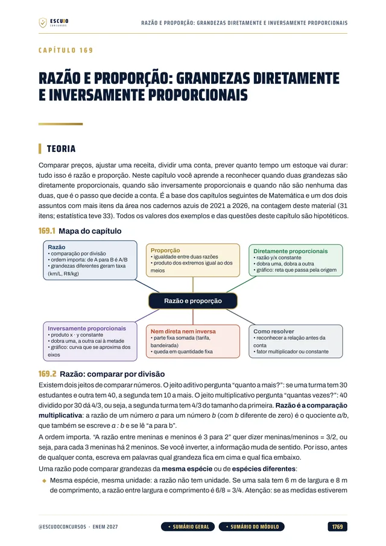
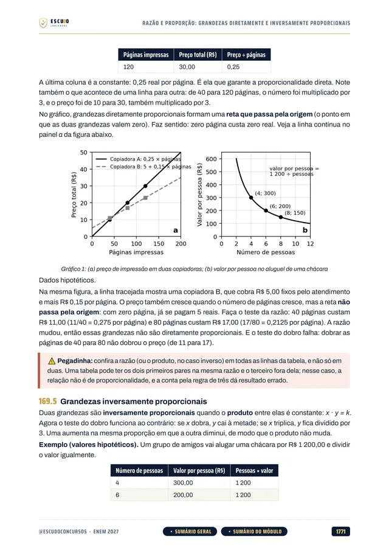
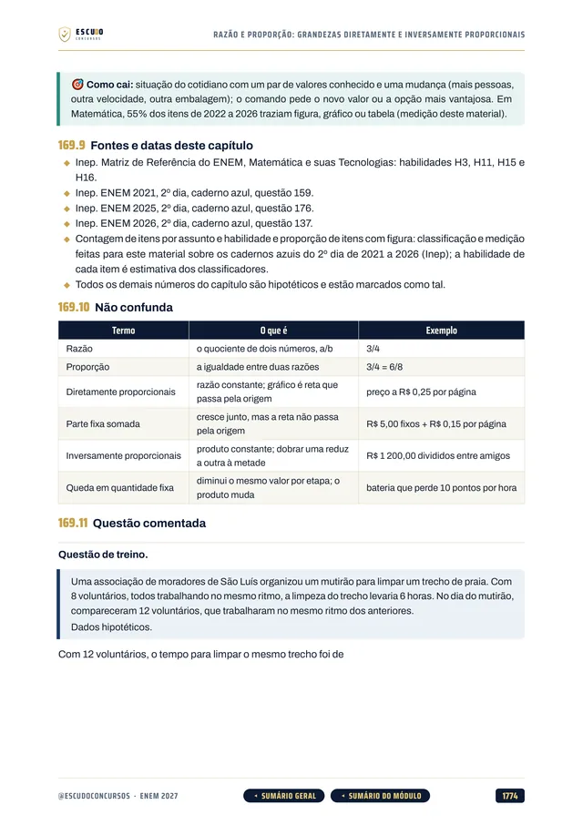
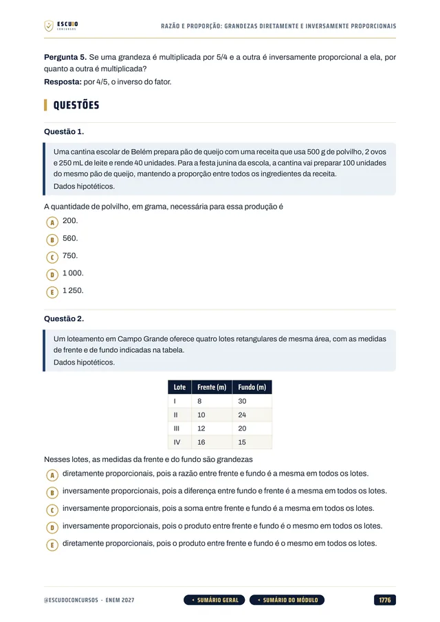
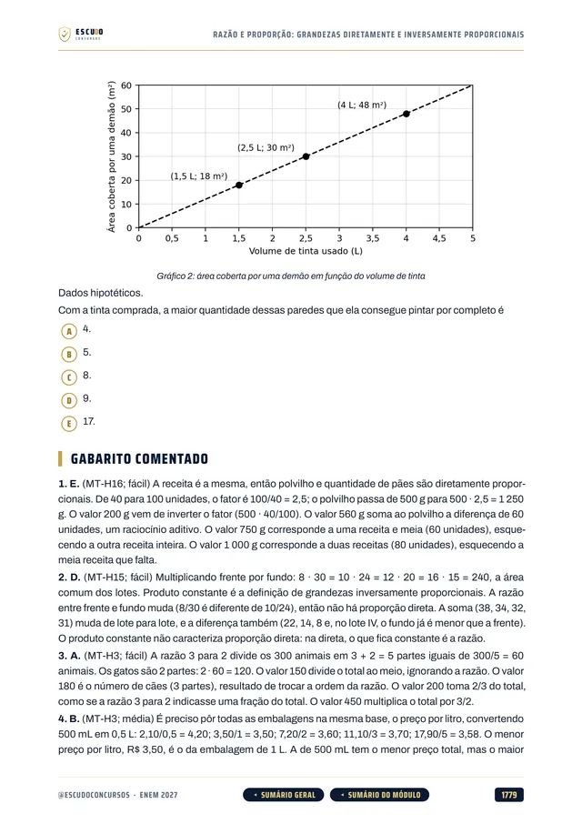
100% em PDF · Garantia de 7 dias · Pagamento pela Hotmart
O que você recebe
Curso em PDF organizado em módulos pelas quatro áreas e pela Redação, com 2.149 páginas no padrão visual ESCUDO, para ler no computador, no tablet, no celular ou no app da Hotmart. Não há videoaulas.
204 capítulos distribuídos pela incidência dos assuntos nas provas de 2021 a 2026, mais um módulo de abertura com o formato do ENEM, a TRI, o plano de estudo e o jeito de usar o material.
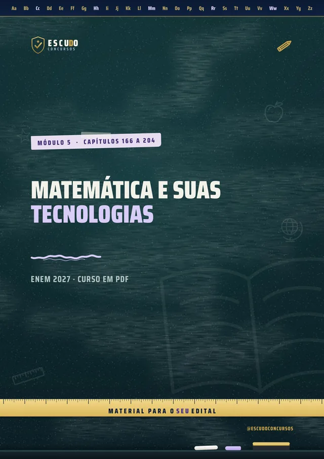
1.259 questões inéditas no estilo do ENEM, com texto-base, comando e 5 alternativas, de (A) a (E), todas com gabarito comentado: por que a correta está correta e onde está o erro de cada uma das outras. Nenhuma questão do Inep é copiada.
Redação em 16 capítulos: a proposta, as cinco competências uma a uma, repertório, projeto de texto, introdução, desenvolvimento, conclusão e os motivos de nota zero, com os temas de 2021 a 2026.
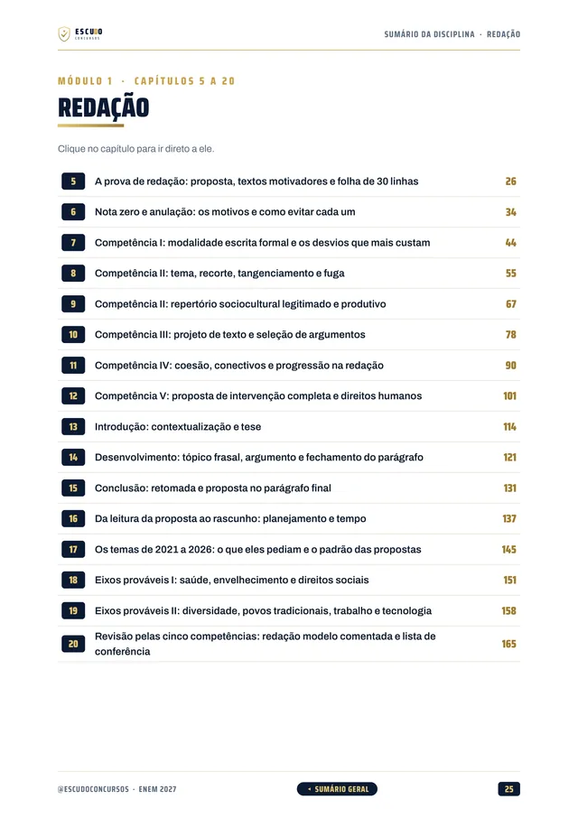
Matemática em 39 capítulos, a área de uma disciplina só, com razão e proporção, estatística, geometria e porcentagem à frente, e as demais áreas por disciplina: Linguagens (46 capítulos), Humanas (51) e Natureza (48).
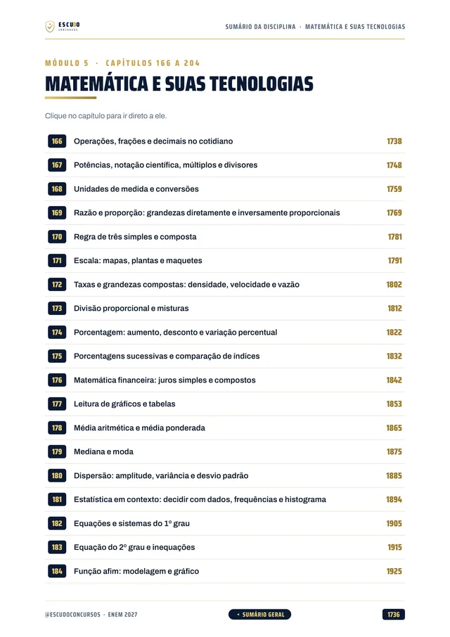
Teoria com recursos para memorizar: mapa de cada capítulo, quadros de "pegadinha" e "não confunda", gráficos e tabelas, revisão relâmpago e teste de memória.
Navegação clicável: do sumário você vai direto ao capítulo, e volta pelo botão do rodapé.
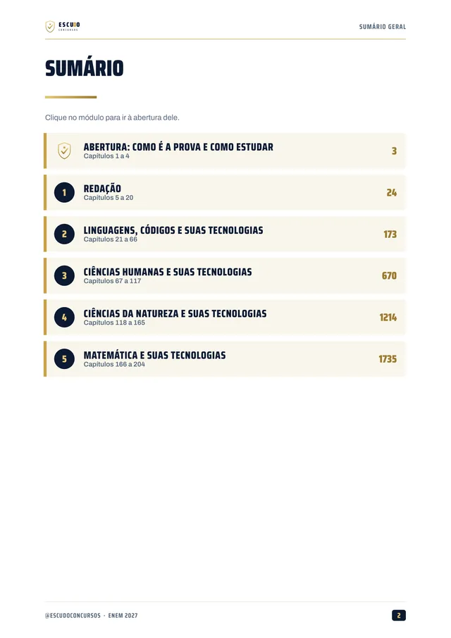
Revisão Expressa (opcional, R$ 19,90, oferecida na compra): 410 páginas com o que se confunde, a revisão relâmpago e o teste de memória dos 204 capítulos, para a reta final.
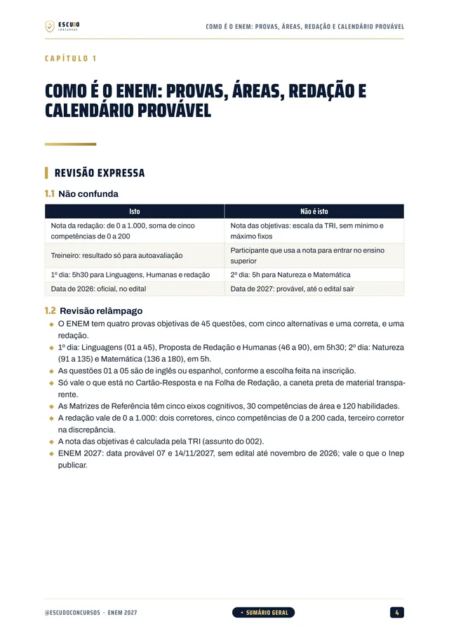
Pacote de 10 Simulados mensais (R$ 59,90, produto separado): 180 questões e uma redação em cada um, no formato do ENEM, liberados aos domingos às 8h, de 10/01 a 17/10/2027.
Área de membros
| Módulo | Conteúdo | Liberação |
|---|---|---|
| M0 Comece aqui | Apresentação + capítulos 001 a 004 (como é o ENEM, TRI e estratégia, plano de estudo e como usar o material). Bônus: PDF completo para baixar e imprimir | Na compra; o PDF completo no 8º dia |
| M1 Redação | Capítulos 005 a 020 | Na compra |
| M2 Linguagens, Códigos e suas Tecnologias | Capítulos 021 a 066: Português, Literatura, Artes, Educação Física, Inglês e Espanhol | Na compra |
| M3 Ciências Humanas e suas Tecnologias | Capítulos 067 a 117: História, Geografia, Filosofia e Sociologia | Na compra |
| M4 Ciências da Natureza e suas Tecnologias | Capítulos 118 a 165: Física, Química e Biologia | Na compra |
| M5 Matemática e suas Tecnologias | Capítulos 166 a 204 | Na compra |
Opcional na compra
Um PDF de 410 páginas que acompanha o curso capítulo por capítulo, com a mesma numeração. Cada um dos 204 capítulos tem três partes: o que se confunde (os pares que o ENEM troca), a revisão relâmpago, com os pontos que você precisa levar para a prova, e o teste de memória, com perguntas e respostas curtas. São 3.010 itens no total.
Use na reta final, para revisar a prova inteira em poucas horas, ou depois de estudar cada capítulo. Na página de compra do curso, a Revisão Expressa aparece como uma opção, por R$ 19,90.
Produto separado
R$ 59,90 por 10 simulados no formato do ENEM: 180 questões objetivas, 45 por área, e uma proposta de redação em cada um. Um por mês, sempre aos domingos às 8h, de 10/01 a 17/10/2027, para você medir onde está e ajustar o estudo até a prova.
Simulado 1
10/01/2027, domingo, 8h
Simulado 2
07/02/2027, domingo, 8h
Simulado 3
07/03/2027, domingo, 8h
Simulado 4
04/04/2027, domingo, 8h
Simulado 5
02/05/2027, domingo, 8h
Simulado 6
06/06/2027, domingo, 8h
Simulado 7
04/07/2027, domingo, 8h
Simulado 8
01/08/2027, domingo, 8h
Simulado 9
05/09/2027, domingo, 8h
Simulado 10
17/10/2027, domingo, 8h
Para quem é
Para quem vai fazer o ENEM 2027 e quer estudar pela Matriz de Referência e pelo que mais cai nas provas, com a Redação, as quatro áreas e a Matemática cobertas por inteiro, em PDF.
Você tem 7 dias de garantia pela Hotmart. Se não for o que você esperava, pede o reembolso pela própria Hotmart, dentro do prazo.
Sem surpresa na área de membros
Na compra: todos os módulos em PDF, a Redação e as quatro áreas, com a teoria e as questões comentadas. É o curso inteiro, para começar a estudar no mesmo dia.
8 dias após a compra: o PDF completo para imprimir. É o mesmo conteúdo dos módulos num arquivo só, liberado depois da garantia de 7 dias.
Revisão Expressa: se você a escolher na compra, o acesso vem junto, no mesmo momento.
Pacote de 10 Simulados: produto separado, com um simulado por mês, aos domingos às 8h, de 10/01 a 17/10/2027.
O PDF completo aparece bloqueado na área de membros até o 8º dia: não é conteúdo faltando, é a liberação programada.
Dúvidas
Não. É um curso 100% em PDF: teoria, questões comentadas e revisão para ler e resolver.
A data oficial ainda não foi divulgada pelo Inep. A data provável é 07 e 14 de novembro de 2027, dois domingos seguidos, como no ENEM 2026 (08 e 15/11/2026). Quando o Inep publicar o calendário, a página é atualizada.
O acesso é imediato depois da confirmação do pagamento, pela área de membros da Hotmart (web ou app). O PDF completo para baixar e imprimir é liberado no 8º dia.
As questões objetivas são corrigidas pela Teoria de Resposta ao Item (TRI), que considera o número de acertos e a coerência das respostas, e não usa pesos por questão. A redação vai de 0 a 1.000 pontos. O capítulo 2 do curso explica a TRI e a estratégia de prova, com base no guia oficial do Inep.
Sim. São 204 capítulos: Redação (16), Linguagens, Códigos e suas Tecnologias (46, com Português, Literatura, Artes, Educação Física, Inglês e Espanhol), Ciências Humanas (51), Ciências da Natureza (48) e Matemática (39), mais 4 capítulos de abertura.
Não. As 1.259 questões são inéditas, escritas no estilo do ENEM (texto-base, comando e 5 alternativas) a partir da Matriz de Referência. Nenhuma questão do Inep é copiada. A distribuição dos capítulos segue a incidência dos assuntos nas provas de 2021 a 2026.
Sim, 5 capítulos de cada. No ENEM você responde só às questões da língua que escolheu na inscrição.
É um PDF opcional de 410 páginas, oferecido por R$ 19,90 na hora da compra, com o que se confunde, a revisão relâmpago e o teste de memória de cada um dos 204 capítulos, para a reta final.
É um produto separado, por R$ 59,90, com 10 simulados mensais no formato do ENEM (180 questões e uma redação em cada um), liberados aos domingos às 8h, de 10/01 a 17/10/2027.
Não. É um material independente da ESCUDO Concursos, sem vínculo com o Inep nem com o MEC.
Você tem 7 dias de garantia pela Hotmart. Se não for o que você esperava, pede o reembolso.
ENEM 2027 · Curso completo
R$59,90
À vista, pagamento único. Acesso imediato.
Material para a SUA prova. ESCUDO Concursos.
Continue estudando
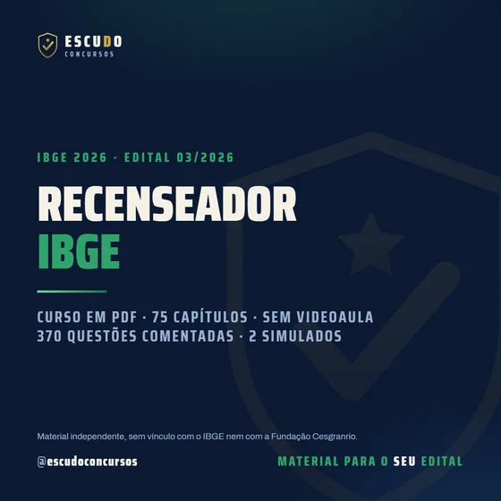
IBGE 2026 · Edital 03/2026 · CesgranrioRecenseador IBGE (12º Censo Agro) INSS 2026 · Pré-editalTécnico do Seguro Social do INSS
INSS 2026 · Pré-editalTécnico do Seguro Social do INSS SEMED Porto Velho/RO 2026 · IBGPProfessor Séries Iniciais de Porto Velho
SEMED Porto Velho/RO 2026 · IBGPProfessor Séries Iniciais de Porto Velho Aparecida de Goiânia 2026 · Instituto Verbena/UFGAgente Educativo de Aparecida de Goiânia
Aparecida de Goiânia 2026 · Instituto Verbena/UFGAgente Educativo de Aparecida de GoiâniaGuia do ENEM 2027: provas, TRI e o que cai · Ver todos: concursos de educação